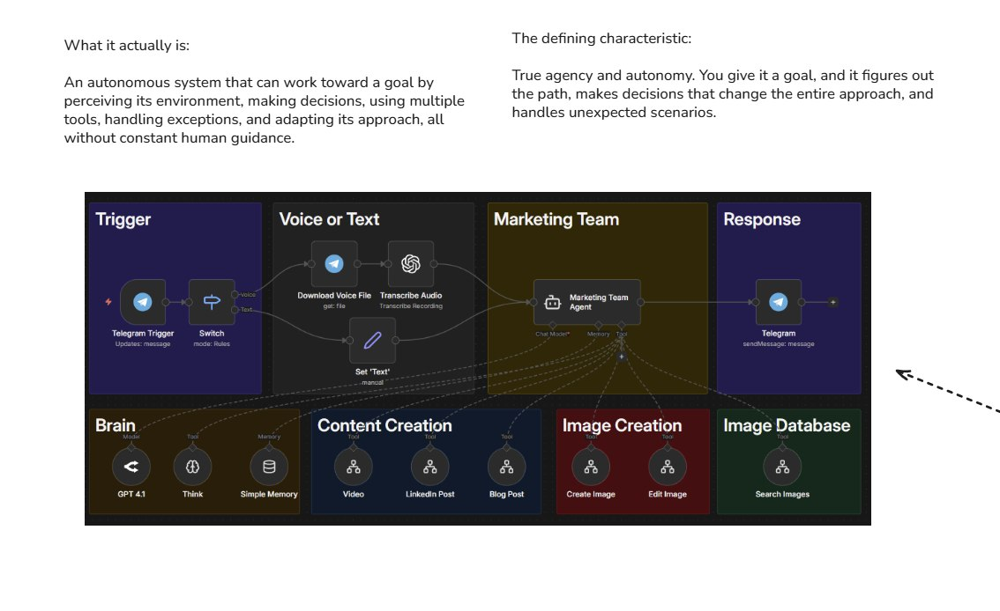

AI Agents: Quando e Por Que
Sistemas autonomos orientados a objetivos - o nivel mais alto da piramide

AI Agent: Sistema autonomo que decide seu proprio caminho para atingir o objetivo
O que sao AI Agents?
A definicao que importa
AI Agents sao sistemas AUTONOMOS que trabalham em direcao a um objetivo de forma INDEPENDENTE. Diferente de workflows que seguem um caminho pre-definido, agents decidem dinamicamente qual sera o proximo passo.
Caracteristicas de um AI Agent:
Recebe um objetivo, nao uma lista de passos
Decide o que fazer e em qual ordem
Escolhe quais ferramentas usar e quando
Ajusta plano com base em resultados
"Um agent nao segue instrucoes - ele entende o objetivo e decide sozinho como chegar la."
Workflow vs Agent: A Diferenca Crucial
Previsibilidade vs Autonomia
AI Workflow
- • Voce define os passos
- • Caminho fixo e previsivel
- • IA decide em pontos especificos
- • Custo previsivel
- • Debug facil
A→B→C→D (sempre)
AI Agent
- • Agent decide os passos
- • Caminho dinamico
- • IA controla todo o fluxo
- • Custo variavel
- • Debug complexo
A→?→?→? (depende)
A pergunta-chave:
"A ordem das operacoes e fixa?" Se SIM, use Workflow. Se NAO (o agent precisa decidir), use Agent.
A Regra dos Tokens Desperdicados
Por que agents custam mais
"Nao use agents para processos lineares"
E desperdicar tokens com raciocinio desnecessario
Por que agents custam mais:
Tokens de raciocinio
Cada decisao do agent consome tokens para "pensar"
Multiplas chamadas
Agent pode precisar de varias iteracoes para completar
Contexto crescente
Historico das acoes aumenta tokens por chamada
Workflow: Custo fixo
1 chamada de classificacao = ~$0.001
Previsivel e otimizavel
Agent: Custo variavel
5-20 chamadas por tarefa = ~$0.05-0.20
50-200x mais caro!
Quando Usar um AI Agent?
Os 4 criterios para decidir
Ordem das operacoes e dinamica
O agent precisa decidir o que fazer em seguida baseado no resultado anterior.
Ex: Pesquisar → Analisar → Decidir se precisa pesquisar mais ou concluir
Etapas podem ser puladas ou repetidas
Nem sempre todas as etapas sao necessarias - depende do contexto.
Ex: Se a informacao ja existe, pular busca e ir direto para analise
Numero de iteracoes e variavel
As vezes resolve em 2 passos, as vezes precisa de 10.
Ex: Resolver um bug pode precisar de multiplas tentativas
Decisoes dependem de contexto complexo
A decisao nao pode ser simplificada em if/then.
Ex: Analisar documentos e decidir qual abordagem tomar
Regra pratica:
Se voce consegue desenhar um fluxograma fixo, use Workflow. Se o fluxograma tem muitos "depende", considere Agent.
Capacidades de um Agent
O que um agent pode fazer
Perceber
Receber informacoes do ambiente, ler dados, analisar contexto.
Raciocinar
Analisar opcoes, planejar proximos passos, tomar decisoes.
Agir
Executar ferramentas, chamar APIs, modificar dados.
Adaptar
Ajustar plano baseado em feedback e resultados.
Ciclo de um Agent:
Trade-offs de Complexidade
O que voce ganha e perde
✓ Vantagens de Agents:
- Flexibilidade - adapta a situacoes imprevistas
- Autonomia - menos intervencao humana
- Tarefas complexas - resolve problemas multifacetados
- Raciocinio - pode "pensar" antes de agir
✗ Desvantagens de Agents:
- Custo alto - multiplas chamadas de LLM
- Imprevisibilidade - resultados podem variar
- Debug dificil - rastrear decisoes e complexo
- Latencia - mais lento que workflows
Resumo do Modulo
Proximo Passo
Aprenda a arquitetura e componentes de um agent!